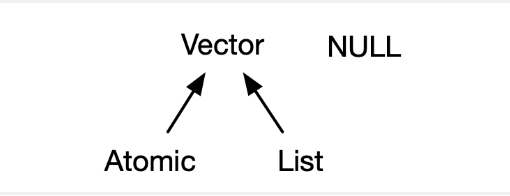
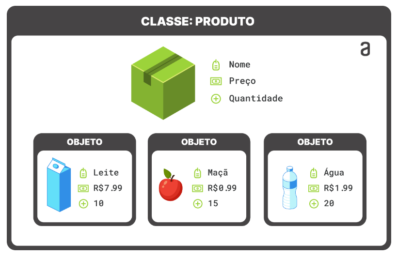

x == y # Igual a
x != y # Diferente de
x < y # Menor que
x > y # Maior que
x <= y # Menor ou igual a
x >= y # Maior ou igual aEstrutura de dados
- No contexto da linguagem de programação R, objetos e vetores são conceitos fundamentais relacionados à manipulação de dados;
Objetos
Um objeto é simplesmente um nome que guarda um valor;
O R permite salvar valores dentro de um objeto
Para criar um objeto, escolha um nome e use
<-ou=para guardar a informação dentro do objetoOutros operadores importantes são:
a <- 10
b <- 5
soma <- a + b # Adição
subtracao <- a - b # Subtração
multiplicacao <- a * b # Multiplicação
divisao <- a / b # Divisão
modulo <- a %% b # Resto da divisão
potencia <- a ^ b # Potência- Considere os exemplos abaixo
a <- 2
a = 2
print(a)[1] 2b <- 1:6
print(b)[1] 1 2 3 4 5 6Observação: quando o objeto for criado, ele aparecerá no painel Environment
Ao escolher nomes para objetos em R, é importante seguir algumas regras e boas práticas para garantir a clareza, consistência e evitar conflitos com palavras reservadas.
Aqui estão algumas restrições para nomear objetos em R:
Sintaxe básica:
Os nomes de objetos devem começar com uma letra.
Podem conter letras, números e pontos (.), mas não podem começar com um número ou conter espaços.
Evite o uso de caracteres especiais, como @, $, %, &, etc.
Palavras reservadas:
- Evite usar nomes que são palavras reservadas em R, pois isso pode causar conflitos. Alguns exemplos de palavras reservadas incluem
if,else,while,function,for,in,TRUE,FALSE, entre outras.
- Evite usar nomes que são palavras reservadas em R, pois isso pode causar conflitos. Alguns exemplos de palavras reservadas incluem
Observação:
O R diferencia letras maiúsculas e minúsculas, isto é,
aé considerado um objeto diferente deAEscolha nomes descritivos que forneçam informações sobre o propósito ou conteúdo do objeto.
No R, uma base de dados é representada por objetos chamados de data frames
Exemplos de nomes aceitáveis:
idade,nomeVariavel,meuVetor,resultado_finaledados_do_paciente
Vetores
Um vetor é uma estrutura de dados unidimensional que pode conter ou não elementos de um único tipo
Os vetores podem ser subdivididos em : vetores atômicos e listas
Eles diferem quanto aos tipos de seus elementos:
para vetores atômicos, todos os elementos devem ter o mesmo tipo;
para listas, os elementos podem ter tipos diferentes.
Os elementos de um vetor são acessados por índices.

Vetores atômicos
Existem quatro tipos principais de vetores atômicos: lógico, inteiro, double e caractere (que contém strings);
Vetores inteiros e double são conhecidos como vetores numéricos;
Para criar vetores use a função
c()(combine)Para saber o tipo de vetor, você pode utilizar a funcão
typeof(). Para saber seu comprimento a funçãolength().Você pode testar se um vetor é de um determinado tipo com uma função
is.*()
Lógico
lgl_var <- c(TRUE, FALSE)# lógico
lgl_var <- c(T, F)# lógico
typeof(lgl_var)# verificar o tipo[1] "logical"is.logical(lgl_var) # testar se o vetor é do tipo lógico[1] TRUEis.integer(lgl_var)[1] FALSElength(lgl_var)[1] 2Double
dbl_var <- c(1, 2.5, 4.5)#forma decimal
dbl_var <- c(1.23e4)##forma científica
typeof(dbl_var) [1] "double"is.double(dbl_var) # testar se o vetor é do tipo Double [1] TRUEis.character(lgl_var)[1] FALSElength(dbl_var)[1] 1- Existem três valores especiais exclusivos para Double: Inf, -Inf e NaN (Not a Number)
dbl_var <- c(Inf,-Inf,NaN)
typeof(dbl_var)[1] "double"Inteiro
- Os inteiros são escritos de forma semelhante aos Double, mas devem ser seguidos por L
int_var <- c(1L, 6L, 10L)# inteiro
typeof(int_var)[1] "integer"is.integer(int_var)[1] TRUEis.character(int_var)[1] FALSElength(int_var)[1] 3Caractere (string)
- As strings são colocadas entre ” ”
chr_var <- c("Leonardo", "Nascimento")
chr_var <- c("Ótimo", "Bom","Ruim")
chr_var <- c("Masculino", "Feminino")
is.character(chr_var)[1] TRUEtypeof(chr_var)[1] "character"Observações
Em um vetor, cada valor ocupa uma posição específica determinada pela ordem em que os elementos foram adicionados durante a criação do vetor.
Essa ordem é crucial para acessar cada valor de maneira individual dentro do vetor.
meu_vetor = c(1,2,10,4,5)
meu_vetor[3][1] 10NULL
- Embora não seja um vetor,
NULLestá intimamente relacionado aos vetores e geralmente desempenha a função de um vetor genérico de comprimento zero.
vetor_null <- c(NULL)
vetor_nullNULLtypeof(vetor_null)[1] "NULL"NA
Em R, “NA” (Not Available) é usado para representar valores ausentes ou desconhecidos.
A maioria dos cálculos envolvendo um valor faltante retornará outro valor faltante.
meu_vetor <- c(10,NA)
2*meu_vetor[1] 20 NA- Para verificar se um valor é “NA”, você pode usar a função
is.na().
x <- c(1, 2,3,NA, 5)
is.na(x)[1] FALSE FALSE FALSE TRUE FALSE- Muitas funções em R têm maneiras para lidar com valores ausentes. Por exemplo, algumas funções têm argumentos como
na.rmpara remover NAs durante cálculos
notas_alunos <- c(10, 7, NA, 8, 8.5)
mean(notas_alunos, na.rm = TRUE) # média[1] 8.375- Você pode substituir valores NA por outros valores usando a função
is.na()e indexação
meu_vetor <- c(1, 2,3, 4, NA)
meu_vetor[is.na(meu_vetor)] <- 0Coerção
Para vetores atômicos, o tipo é uma propriedade de todo o vetor
Todos os elementos devem ser do mesmo tipo.
Quando você tenta combinar tipos diferentes, eles serão forçados em uma ordem fixa: caractere → double → inteiro → lógico.
y1 <- c(1L,"leonardo") # inteiro, character
y1[1] "1" "leonardo"typeof(y1)[1] "character"y2 <- c(5.5,10L) # double, inteiro
y2[1] 5.5 10.0typeof(y2)[1] "double"Listas
As listas são um avanço em complexidade em relação aos vetores atômicos: cada elemento pode ser de qualquer tipo
Você constrói listas com a função
list()
l1 <- list(
1:3,
"a",
c(TRUE, FALSE, TRUE),
c(2.3, 5.9)
)
print(l1)[[1]]
[1] 1 2 3
[[2]]
[1] "a"
[[3]]
[1] TRUE FALSE TRUE
[[4]]
[1] 2.3 5.9typeof(l1)[1] "list"- Para acessa um elemento da lista usamos
[[ ]]
l1 <- list(
1:3,
"a",
c(TRUE, FALSE, TRUE),
c(2.3, 5.9)
)
l1[[4]][1] 2.3 5.9l1[[4]][1][1] 2.3- Você pode testar uma lista com
is.list()e forçar uma lista comas.list()
minha_lista = list(1:3)
print(minha_lista)[[1]]
[1] 1 2 3is.list(minha_lista)[1] TRUEvec <- c(1,2,3)
is.list(vec)[1] FALSEas.list(vec)[[1]]
[1] 1
[[2]]
[1] 2
[[3]]
[1] 3Você pode transformar uma lista em um vetor atômico com unlist().
minha_lista = list(1:3,4:10)
print(minha_lista)[[1]]
[1] 1 2 3
[[2]]
[1] 4 5 6 7 8 9 10unlist(minha_lista) [1] 1 2 3 4 5 6 7 8 9 10- As regras para o tipo resultante são complexas, não estão bem documentadas e nem sempre são equivalentes ao que você obteria com
c().
Matrizes
Uma matriz em R é uma estrutura bidimensional que pode armazenar dados de um único tipo.
Isso significa que todos os elementos de uma matriz devem ser do mesmo tipo, como números inteiros, double ou caracteres.
Você pode criar uma matriz usando a função
matrix(). Especifique os dados e o número de linhas e colunas.
# Criando uma matriz 2x2
vec1 = c(1,2)
vec2 = c(3,4)
minha_matriz <- matrix(c(vec1,vec2), nrow = 2, ncol = 2)
minha_matriz [,1] [,2]
[1,] 1 3
[2,] 2 4is.matrix(minha_matriz)[1] TRUEvec1 = c(1,2)
vec2 = c(3,4)
minha_matriz <- matrix(c(vec1,vec2), nrow = 2, ncol = 2,byrow = T)
minha_matriz [,1] [,2]
[1,] 1 2
[2,] 3 4dim(minha_matriz)[1] 2 2ncol(minha_matriz)[1] 2nrow(minha_matriz)[1] 2- Os elementos de uma matriz podem ser acessados usando índices de linha e coluna.
minha_matriz[1,2] # Acessando o elemento na primeira linha e segunda coluna[1] 2- Adicionando nomes
rownames(minha_matriz) = c("linha1","linha2")
colnames(minha_matriz) = c("C1","C2")
minha_matriz C1 C2
linha1 1 2
linha2 3 4minha_matriz[,"C1"] # acessando a coluna 1linha1 linha2
1 3 Array
Um array em R é uma estrutura de dados multidimensional que pode conter elementos de um único tipo. Diferentemente das matrizes, os arrays podem ter mais de duas dimensões.
Você pode criar um array usando a função
array(). Especifique os dados e as dimensões.
# Criando um array 2x3x2 - linhas X colunas X camadas
vec1 = c(1L,2L,3L,4L)
vec2 = c(5L,6L,7L,8L)
vec2 = c(5L,6L,7L,8L)
meu_array <- array(c(vec1,vec2), dim = c(2,2,3))
meu_array, , 1
[,1] [,2]
[1,] 1 3
[2,] 2 4
, , 2
[,1] [,2]
[1,] 5 7
[2,] 6 8
, , 3
[,1] [,2]
[1,] 1 3
[2,] 2 4typeof(meu_array)[1] "integer"- Os elementos de um array são acessados usando índices correspondentes às dimensões.
meu_array[1,2,2]# linhas X colunas X camadas[1] 7meu_array[,,1] # acessando a matriz da primeira camada [,1] [,2]
[1,] 1 3
[2,] 2 4meu_array[,,2]# acessando a matriz da segunda camada [,1] [,2]
[1,] 5 7
[2,] 6 8Data frame
No R, um data frame é uma estrutura de dados bidimensional semelhante a uma tabela em um banco de dados relacional ou a uma planilha.
Cada coluna em um data frame pode conter dados de diferentes tipos, tornando-os especialmente úteis para representar conjuntos de dados complexos.
Você pode criar um data frame manualmente usando a função
data.frame().
meu_data_frame <- data.frame(
Nome = c("Alice","Leo","Vitor"),
Idade = c(25,30,22),
Nota = c(85, 92, 78)
)
str(meu_data_frame) # informações sobre as colunas'data.frame': 3 obs. of 3 variables:
$ Nome : chr "Alice" "Leo" "Vitor"
$ Idade: num 25 30 22
$ Nota : num 85 92 78meu_data_frame Nome Idade Nota
1 Alice 25 85
2 Leo 30 92
3 Vitor 22 78dados_climaticos <- data.frame(
Dia = seq(from = as.Date("2023-01-01"), by = "days", length.out = 5),
Temperatura = c(25.3, 24.5, 22.0, 26.8, 23.5),
Umidade = c(65, 70, 75, 60, 80),
VelocidadeVento = c(10, 12, 8, 15, 9)
)
# Exibindo o data frame
print(dados_climaticos) Dia Temperatura Umidade VelocidadeVento
1 2023-01-01 25.3 65 10
2 2023-01-02 24.5 70 12
3 2023-01-03 22.0 75 8
4 2023-01-04 26.8 60 15
5 2023-01-05 23.5 80 9head(dados_climaticos,3) Dia Temperatura Umidade VelocidadeVento
1 2023-01-01 25.3 65 10
2 2023-01-02 24.5 70 12
3 2023-01-03 22.0 75 8Você pode acessar uma coluna específica usando o nome da coluna.
Você também pode acessar elementos por índices de linha e coluna
dados_climaticos$Temperatura[1] 25.3 24.5 22.0 26.8 23.5dados_climaticos[,2][1] 25.3 24.5 22.0 26.8 23.5dados_climaticos[1:3,2][1] 25.3 24.5 22.0- Outra maneira de acessar as informções é usando a função
subset()
subset(dados_climaticos,Umidade>70) Dia Temperatura Umidade VelocidadeVento
3 2023-01-03 22.0 75 8
5 2023-01-05 23.5 80 9Atributos
- Além dos próprios elementos, os vetores podem ter atributos que fornecem informações adicionais sobre os dados

Nomes
- Você pode atribuir nomes a cada elemento do vetor usando a função
names(). Isso facilita a referência a elementos específicos pelo nome.
meu_vetor <- c(1, 2, 3)
names(meu_vetor) <- c("primeiro", "segundo", "terceiro")
meu_vetorprimeiro segundo terceiro
1 2 3 attributes(meu_vetor)$names
[1] "primeiro" "segundo" "terceiro"- Formas alternativas para nomear um vetor
x1 <- c(a = 1, b = 2, c = 3)
x1a b c
1 2 3 x2 <- setNames(1:3, c("a", "b", "c"))
x2a b c
1 2 3 Dimensão
- Em R, vetores podem ter atributos de dimensão, que são comumente associados a matrizes.
meu_vetor <- 1:5
meu_vetor[1] 1 2 3 4 5dim(meu_vetor) <- c(5, 1) # linha x coluna
meu_vetor [,1]
[1,] 1
[2,] 2
[3,] 3
[4,] 4
[5,] 5attributes(meu_vetor)$dim
[1] 5 1Classe
A classe de um objeto é uma propriedade que indica a natureza ou tipo do objeto em termos de programação orientada a objetos
A classe é uma parte fundamental em R, pois determina como o objeto será tratado em operações específicas e quais métodos (funções associadas) podem ser aplicados a ele.
Aqui estão algumas das classes mais comuns em R:
numeric: Números reais (double).
integer: Números inteiros.
logical: Valores lógicos (TRUE ou FALSE).
character: Strings de caracteres.
factor: Fatores, usados para representar variáveis categóricas com níveis
Date: Representação de datas.
POSIXct e POSIXlt: Representação de datas e horas.
data.frame: Uma estrutura bidimensional que pode conter colunas de diferentes classes.
matrix: Uma estrutura bidimensional que contém elementos de uma única classe.
array: Uma estrutura de dados multidimensional que pode conter elementos de uma única classe.
list: Uma estrutura que pode conter elementos de diferentes classes e até outras listas.
function: Funções.
Em R, a função
class()é usada para obter a classe de um objeto
vec1 = c(1,2)
vec2 = c(3,4)
class(vec1)[1] "numeric"minha_matriz <- matrix(c(vec1,vec2), nrow = 2, ncol = 2)
minha_matriz [,1] [,2]
[1,] 1 3
[2,] 2 4class(minha_matriz)[1] "matrix" "array" - Você pode atribuir uma classe a um vetor usando a função
class(). Isso é comumente usado em programação orientada a objetos em R.
vec <- c(1,2,3,4)
class(vec)[1] "numeric"class(vec)<- "minha_classe"
class(vec)[1] "minha_classe"Exemplo
- Criando um objeto da classe Pessoa
pessoa1 <- structure(
c("Leonardo"),
idade = 31,
last_name = "Nascimento",
class = "Pessoa"
)
pessoa1[1] "Leonardo"
attr(,"idade")
[1] 31
attr(,"last_name")
[1] "Nascimento"
attr(,"class")
[1] "Pessoa"class(pessoa1)[1] "Pessoa"attr(pessoa1,"idade") # selecionado o atributo idade[1] 31names(pessoa1)NULLAtividades
Questão 1
#'Criar uma classe simples chamada "Produto" que representa um produto.
#'Considere os atributos: preço e validade.
#'Utilizar a função structure para criar objetos da classe "Produto".
#' Considere o exemplo para trabalhar com datas
exem_data = as.Date("2023-12-31") # ano-mês-dia
data_formatada = format(exem_data, format = "%d/%m/%Y") # dia-mês-ano
data_formatadaQuestão 2
#'Criar uma classe simples chamada "Livro" que representa um livro com atributos: autor e ano de publicação.
#'Utilizar a função structure para criar objetos da classe "Livro" com informações fictícias.Questão 3
## letra a)---------
#' Crie um data.frame contendo as variáveis: nome e nota
#' escolha os nomes e valores
#' 5 linhas
## letra b)---------
#' Adicione um atributo chamado "disciplina", representando o nome da disciplina e
#' Exiba o atributo "disciplina"
## letra c)---------
#'Modifique o valor do atributo "disciplina" para representar outra disciplina.
## letra d)---------
#'Adicione o atributo "semestre" e Exiba o atributo "semestre"